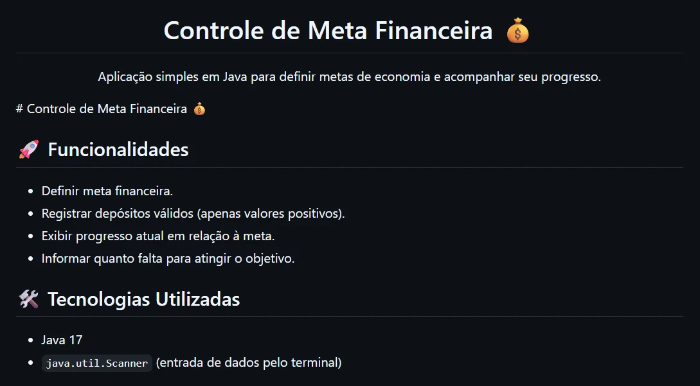
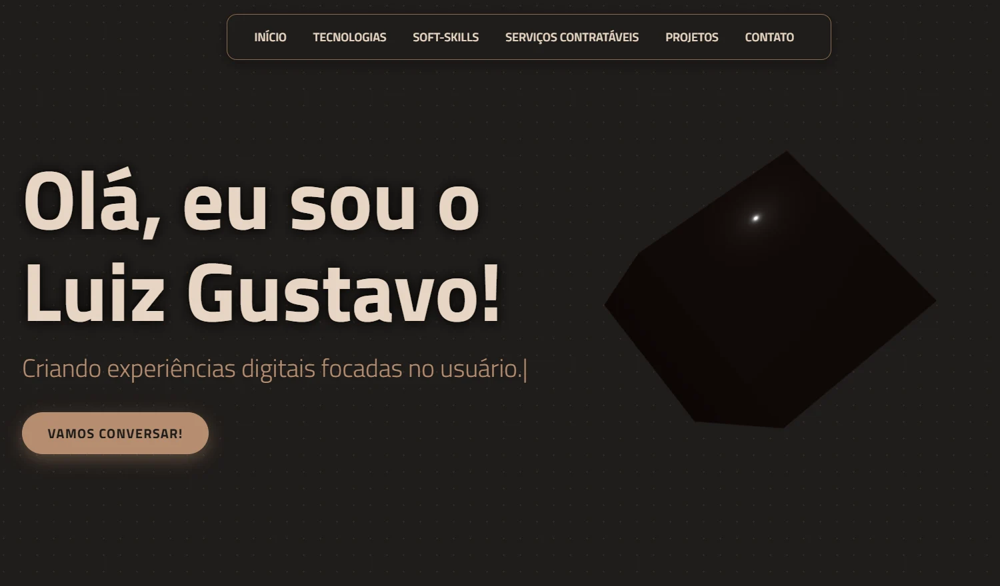

Meus Projetos

Controle Financeiro
Ver detalhes +

Portfólio Interativo
Ver detalhes +

E-commerce Fullstack
Ver detalhes +

Sistema de Gestão
Ver detalhes +
Título do Projeto
Tecnologias:
Como eu fiz (Engenharia):
Descrição...